Golden Grains Group is building an integrated soybean processing and port complex: a dedicated deep-water berth, silo storage and an extraction plant in one node of the New Silk Road.
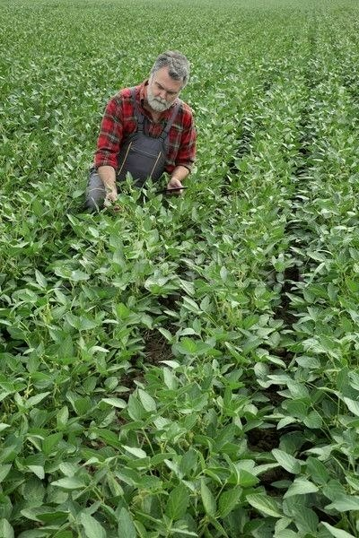
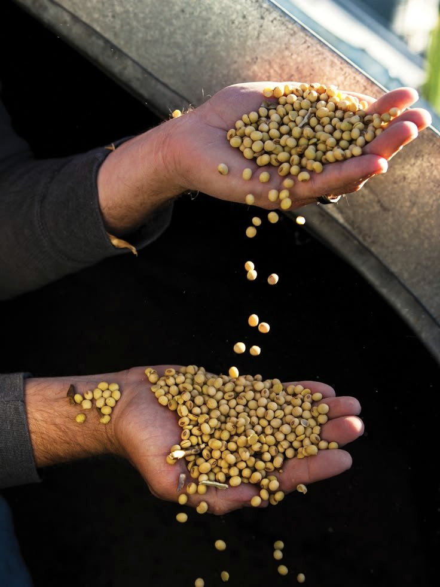
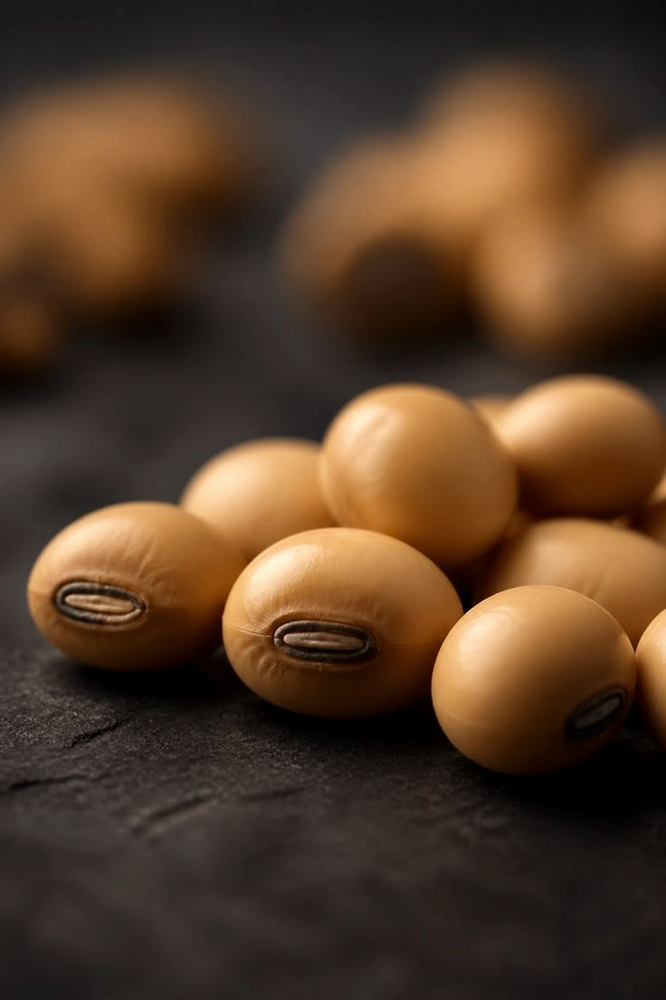
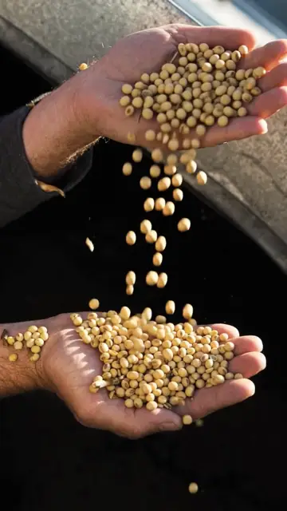
From bean to protein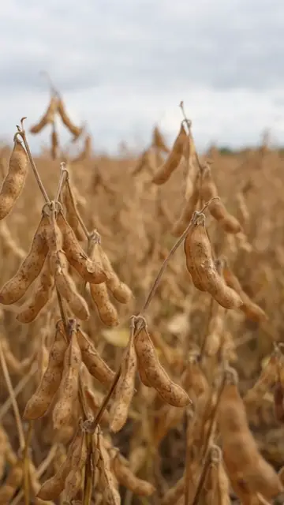
Meal, oil and lecithin on CPM Europa Crown technology.
Steel silos with 11 to 12 weeks of autonomy.
Handymax to Panamax vessels, direct export without intermediaries.
0% VAT and duties on feedstock and exports.
Central Asia by rail. China, Türkiye, EU, Middle East and India by sea.
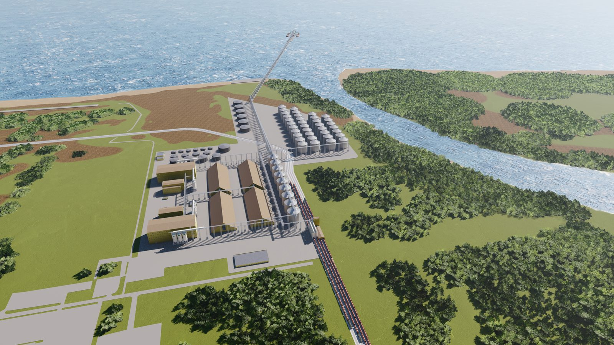
Not part of the commercial port. Vessels of 50 to 60 kt unload at about 1,500 t per hour, a full parcel in 2 to 2.5 days. Design depth up to 15 m.
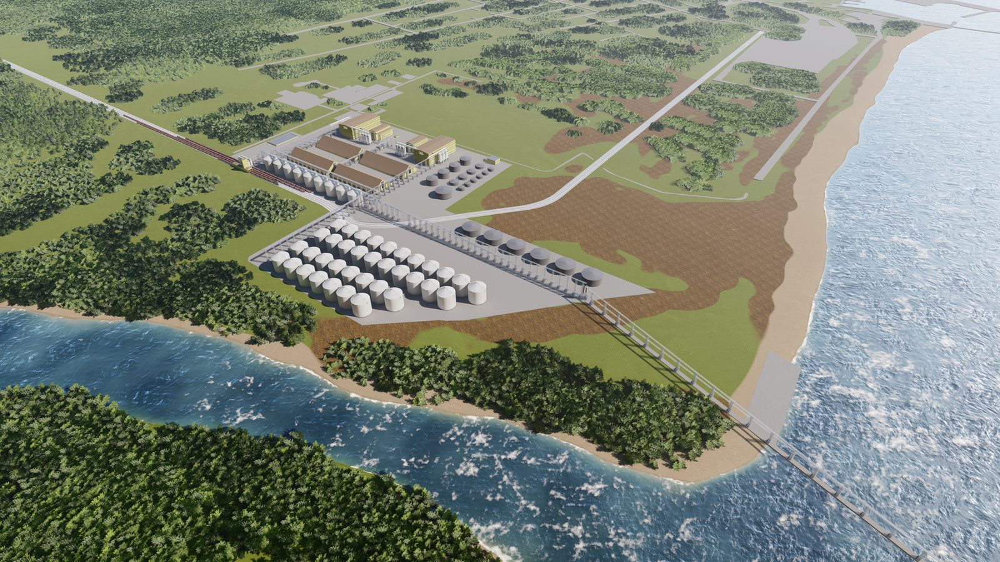
45 to 50 steel silos of about 10,500 t each, oil tanks and meal warehouses. Direct conveyor feed to the plant. Engineering and equipment by AGI.
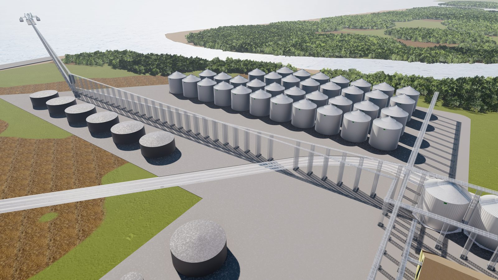
Cleaning, dehulling, conditioning, solvent extraction and desolventising. Degumming yields food-grade lecithin. HACCP and ISO 22000 across the line.
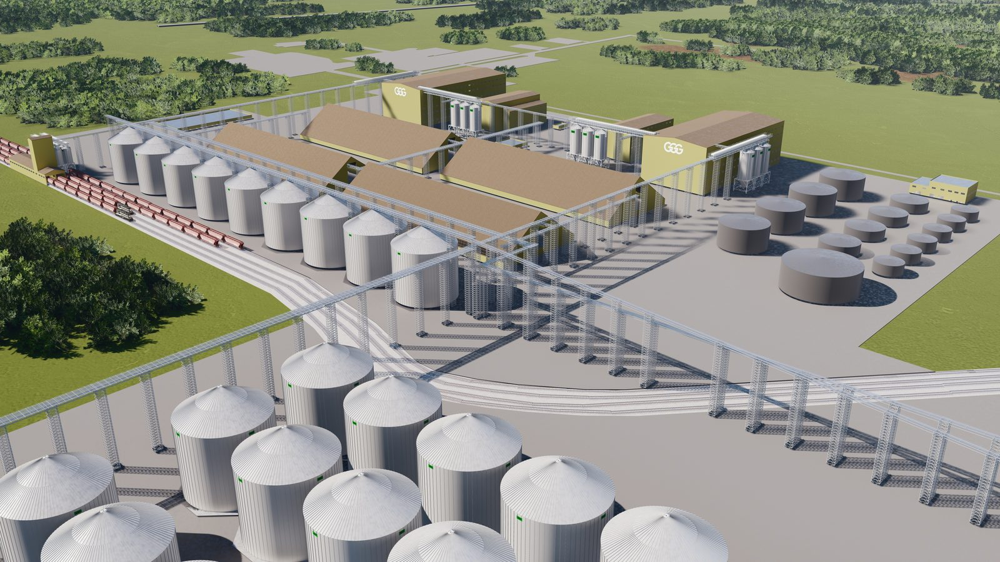
Meal by rail and road to Central Asia. Oil in bulk by sea to China, Türkiye, the EU, the Middle East and India. Lecithin in containers and flexitanks.
We close the gap between port and processing. Soybeans arrive by sea, move by conveyor into our silos and feed the plant directly. Finished products leave through the same berth or by rail.
Handymax to Panamax vessels of 50 to 60 kt. Unloading at about 1,500 t per hour, a 60 kt vessel in 2 to 2.5 days. Throughput up to 7.5 Mt per year, including commercial grain.
450 kt of steel silos in Phase 1, expandable to 900 kt. Direct feed to the plant, oil tanks and meal warehouses on site.
1.5 to 1.7 Mt per year in Phase 1, 3.4 Mt at full scale. Meal, oil and lecithin on CPM Europa Crown technology.
Three markets at once: feed protein, food ingredients and industrial use including biofuels. Soy is less exposed to any single demand factor.
Production sits in the United States, Brazil and Argentina. Consumption sits in Europe, the Middle East, North Africa and Central Asia. Logistics and processing are where value is created.
The EU, MENA and Central Asia are net importers of protein. A processing hub next to these markets lowers the cost of feed.
Control of port, storage and processing close to demand, instead of a bet on the price of beans.
world soybean production, on about 146 million hectares
Feedstock is bought in a global market with two or three main origins. Added value is created in processing and logistics, closer to the consumer.
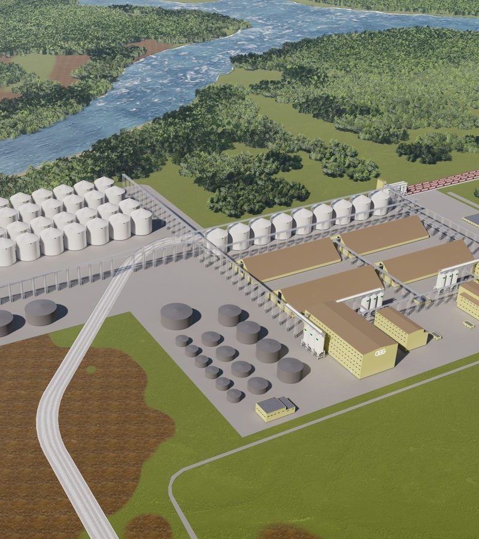
Poti FIZ · 42 ha · Black SeaPoti is Georgia's largest seaport and the Black Sea gateway of the Middle Corridor. From here, Southern Europe, the Eastern Mediterranean, the Middle East, North Africa, the Caucasus and Central Asia are all within reach.
| Parameter | Phase 1 | Full project |
|---|---|---|
| Soybean processing | 1.5 to 1.7 Mt / yr | 3.4 Mt / yr |
| Soybean meal, 48 to 54% protein | ~1.2 Mt / yr | ~2.4 Mt / yr |
| Soybean oil | 270 to 320 kt | 540 to 650 kt |
| Lecithin | 3 to 8 kt | 6 to 16 kt |
| Silo storage | 450 kt | up to 900 kt |
| Port throughput | 7 Mt / yr | scalable |
Mass balance, indicative: meal ~72%, oil ~20%, hulls ~6%, lecithin ~0.5%. Feedstock from the United States, Brazil and Argentina.
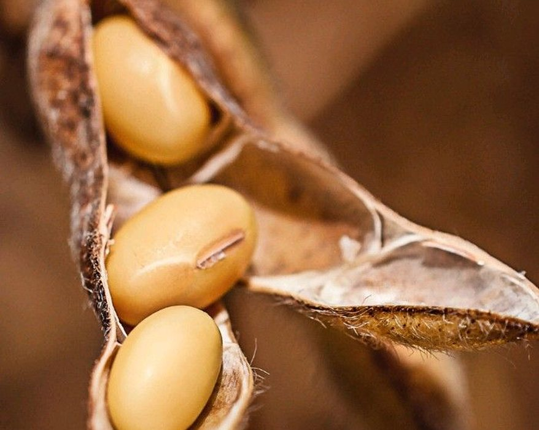
Meal ~72% · oil ~20% · hulls ~6% · lecithin ~0.5%. Every fraction has a market and a route out of Poti.
48 to 54% protein, the global benchmark for feed protein. Rail to Central Asia.
Crude and degummed, edible after refining. Bulk sea shipments to China, Türkiye, the EU, the Middle East and India.
E322 specification for food and pharmaceutical use. Containers and flexitanks.
High-fibre feed component. Quality system HACCP / ISO 22000 across the plant.
Process design and key units: solvent extractor, desolventiser-toaster, refining. Guaranteed design yields, training and supervision of installation.
Engineering of the port complex, silo storage and handling. Equipment manufactured in Italy and the United States. Negotiating the role of EPC general contractor.
Berth, approach channel, dredging and coastal structures. Compliance with IFC, EBRD and World Bank standards, ESG. Marine concept contract signed.
Plant and port: 30 to 36 months for Phase 1. Ramp-up 12 to 18 months after launch. Phase 2 doubles capacity on Phase 1 infrastructure at a lower unit cost.
Feedstock arrives in Poti, is stored, processed and exported as finished products. Georgia keeps the whole industrial chain, not just the transit.
A preliminary teaser for banks and institutional investors is available on request. Full financial model, term sheets with EPC partners and independent engineering and ESG opinions follow.